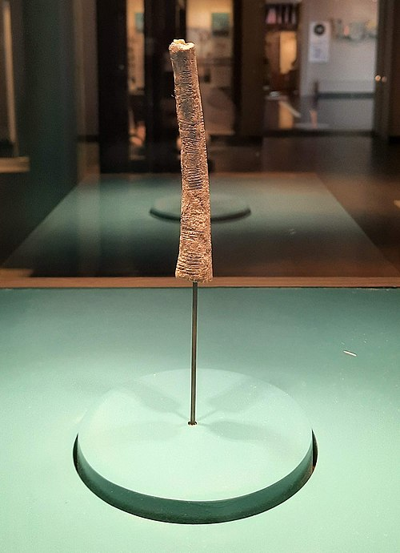

Aritmética A Origem de Tudo

A aritmética é o ramo mais básico e fundamental da matemática, responsável pelo estudo dos números e das operações elementares: adição, subtração, multiplicação e divisão.

Seu nome vem do grego arithmos, que significa “número”, indicando desde sua origem a relação direta com a ideia de quantificar e medir o mundo.
Mais do que apenas “fazer contas”, a aritmética estabelece as regras que permitem manipular quantidades de forma lógica e consistente, sendo a base sobre a qual toda a matemática foi construída.
A aritmética não surgiu como uma invenção formal, nem foi criada por uma única pessoa. Ela se desenvolveu ao longo de milhares de anos a partir de necessidades práticas da vida humana.
Antes da existência da escrita (aproximadamente antes de 3000 a.C.), seres humanos já precisavam:
Esse período inicial é conhecido como fase da contagem concreta, que remonta aproximadamente entre 20.000 a.C. e 5.000 a.C.
Um dos registros mais antigos desse tipo de pensamento é o Osso de Ishango, datado de cerca de 20.000 a.C., que apresenta marcas organizadas interpretadas como um sistema primitivo de contagem.

Com o surgimento das primeiras civilizações, como Egito e Babilônia (cerca de 3000 a.C. – 2000 a.C.), a aritmética começou a se estruturar:
criação de sistemas numéricos desenvolvimento de métodos de cálculo uso em comércio, construção e agricultura
Nesse momento, a aritmética ainda era prática, sem explicações teóricas.